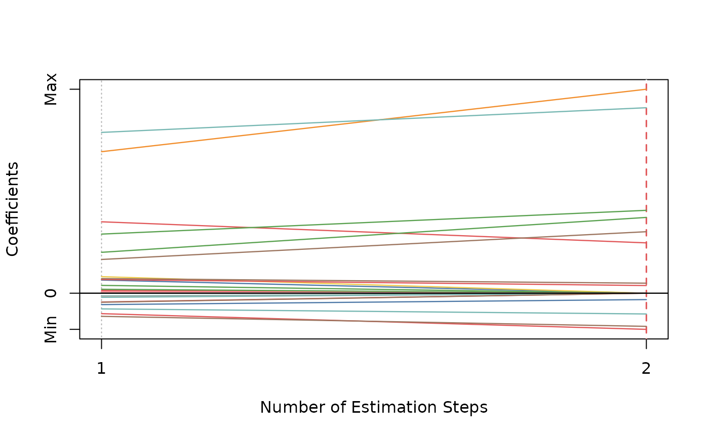

Adaptive Elastic-Net
Usage
aenet(
x,
y,
family = c("gaussian", "binomial", "poisson", "cox"),
init = c("enet", "ridge"),
alphas = seq(0.05, 0.95, 0.05),
tune = c("cv", "ebic", "bic", "aic"),
nfolds = 5L,
rule = c("lambda.min", "lambda.1se"),
ebic.gamma = 1,
scale = 1,
lower.limits = -Inf,
upper.limits = Inf,
penalty.factor.init = rep(1, ncol(x)),
seed = 1001,
parallel = FALSE,
verbose = FALSE
)Arguments
- x
Data matrix.
- y
Response vector if
familyis"gaussian","binomial", or"poisson". Iffamilyis"cox", a response matrix created bySurv.- family
Model family, can be
"gaussian","binomial","poisson", or"cox".- init
Type of the penalty used in the initial estimation step. Can be
"enet"or"ridge".- alphas
Vector of candidate
alphas to use incv.glmnet.- tune
Parameter tuning method for each estimation step. Possible options are
"cv","ebic","bic", and"aic". Default is"cv".- nfolds
Fold numbers of cross-validation when
tune = "cv".- rule
Lambda selection criterion when
tune = "cv", can be"lambda.min"or"lambda.1se". Seecv.glmnetfor details.- ebic.gamma
Parameter for Extended BIC penalizing size of the model space when
tune = "ebic", default is1. For details, see Chen and Chen (2008).- scale
Scaling factor for adaptive weights:
weights = coefficients^(-scale).- lower.limits
Lower limits for coefficients. Default is
-Inf. For details, seeglmnet.- upper.limits
Upper limits for coefficients. Default is
Inf. For details, seeglmnet.- penalty.factor.init
The multiplicative factor for the penalty applied to each coefficient in the initial estimation step. This is useful for incorporating prior information about variable weights, for example, emphasizing specific clinical variables. To make certain variables more likely to be selected, assign a smaller value. Default is
rep(1, ncol(x)).- seed
Random seed for cross-validation fold division.
- parallel
Logical. Enable parallel parameter tuning or not, default is FALSE. To enable parallel tuning, load the
doParallelpackage and runregisterDoParallel()with the number of CPU cores before calling this function.- verbose
Should we print out the estimation progress?
References
Zou, Hui, and Hao Helen Zhang. (2009). On the adaptive elastic-net with a diverging number of parameters. The Annals of Statistics 37(4), 1733--1751.
Author
Nan Xiao <https://nanx.me>
Examples
dat <- msaenet.sim.gaussian(
n = 150, p = 500, rho = 0.6,
coef = rep(1, 5), snr = 2, p.train = 0.7,
seed = 1001
)
aenet.fit <- aenet(
dat$x.tr, dat$y.tr,
alphas = seq(0.2, 0.8, 0.2), seed = 1002
)
print(aenet.fit)
#> Call: aenet(x = dat$x.tr, y = dat$y.tr, alphas = seq(0.2, 0.8, 0.2),
#> seed = 1002)
#> Df %Dev Lambda
#> 1 12 0.7962207 9.644864e+14
msaenet.nzv(aenet.fit)
#> [1] 2 3 4 5 33 35 49 114 269 363 379 441
msaenet.fp(aenet.fit, 1:5)
#> [1] 8
msaenet.tp(aenet.fit, 1:5)
#> [1] 4
aenet.pred <- predict(aenet.fit, dat$x.te)
msaenet.rmse(dat$y.te, aenet.pred)
#> [1] 2.640474
plot(aenet.fit)
